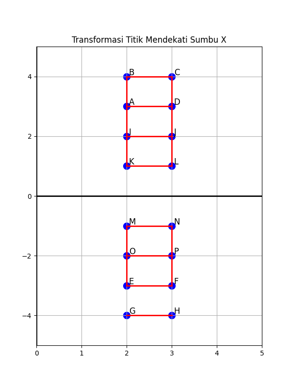
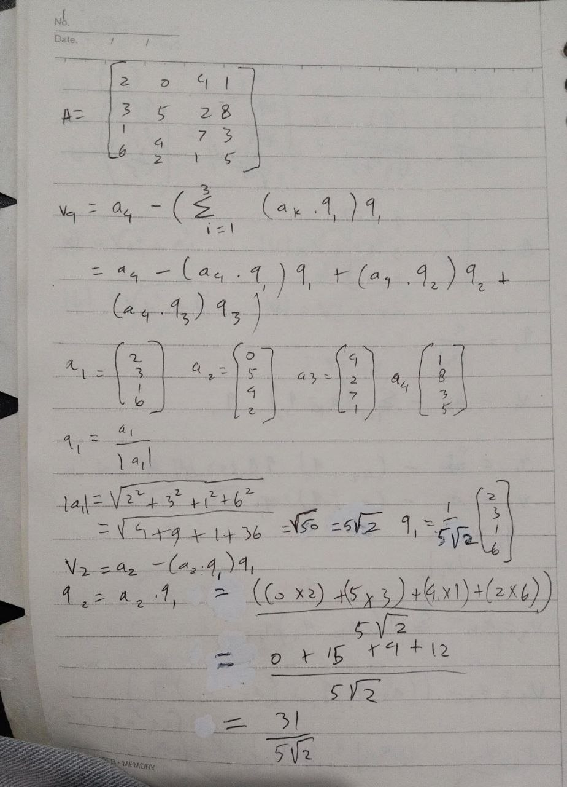
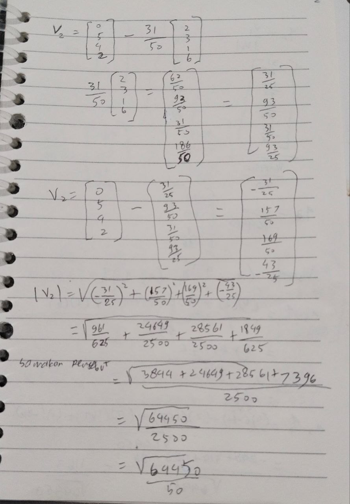
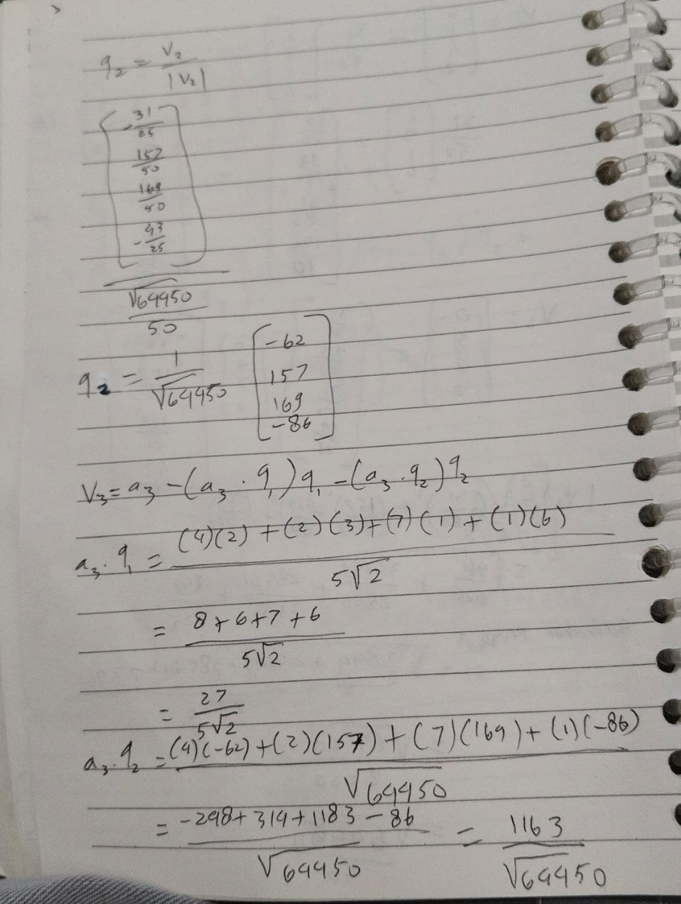
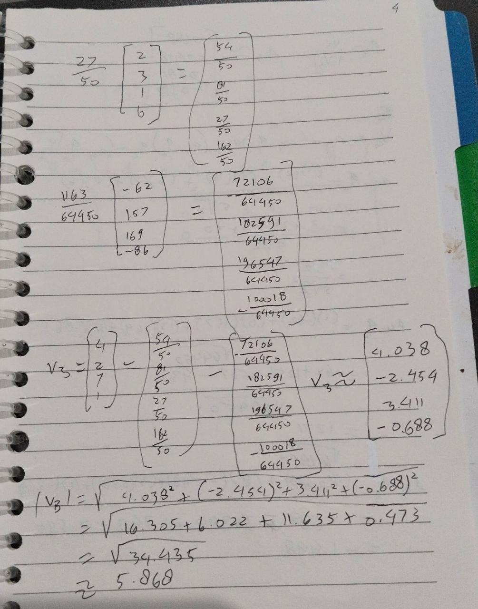
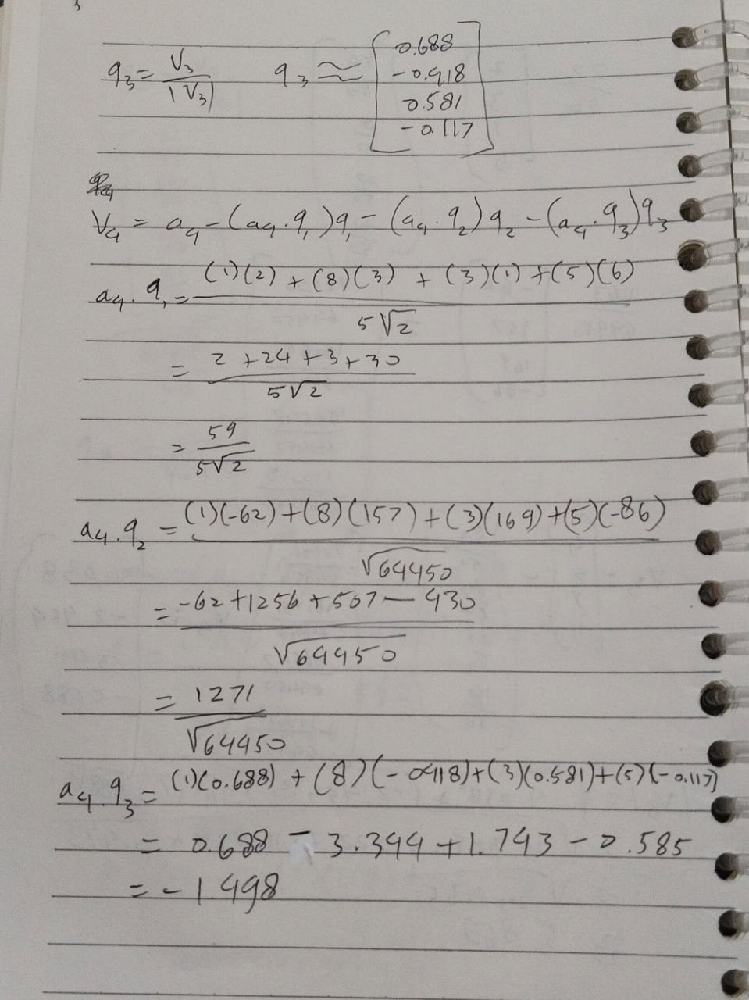
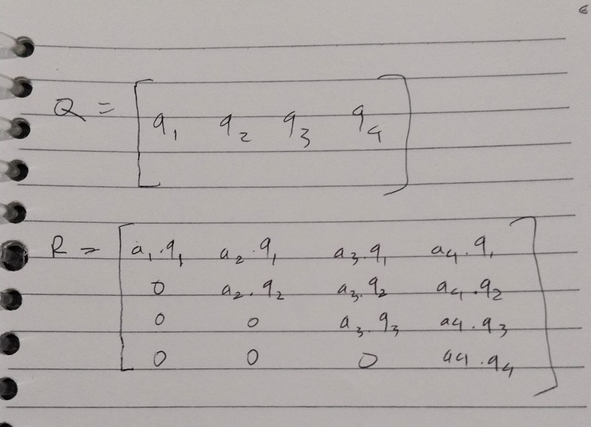

contoh penyelesaian#
contoh penyelesaian sistem persamaan linear 4 variabel menggunakan metode eliminasi gaussian
# 1. Definisi Matriks Augmentasi
B4 = matrix(QQ, [[1, 1, 1, 1, 10],
[1, -1, 2, 1, 8],
[2, 1, -1, 2, 11],
[1, 2, 1, -1, 6]])
print("Matriks 4 Variabel (M0):")
show(B4)
# 2. Langkah OBE Strategis
M1 = B4.with_added_multiple_of_row(1, 0, -1)
M2 = M1.with_added_multiple_of_row(2, 0, -2)
M3 = M2.with_added_multiple_of_row(3, 0, -1)
# Menghaluskan Baris 2 (Pivot)
M4 = M3.with_rescaled_row(1, -1/2)
# Eliminasi di bawah Pivot baris 2
M5 = M4.with_added_multiple_of_row(2, 1, 1)
M6 = M5.with_added_multiple_of_row(3, 1, -1)
print("Proses OBE sedang berjalan...")
show(M6)
# Hasil Akhir Otomatis
print("Hasil Akhir Bentuk Eselon:")
show(B4.echelon_form())
Matriks Awal#
\[\begin{split}
\begin{pmatrix}
1 & 1 & 1 & 1 & 10 \\
1 & -1 & 2 & 1 & 8 \\
2 & 1 & -1 & 2 & 11 \\
1 & 2 & 1 & -1 & 6
\end{pmatrix}
\end{split}\]
Proses OBE (Sedang Berjalan)#
\[\begin{split}
\begin{pmatrix}
1 & 1 & 1 & 1 & 10 \\
0 & 1 & -\frac{1}{2} & 0 & 1 \\
0 & 0 & -\frac{7}{2} & 0 & -8 \\
0 & 0 & \frac{1}{2} & -2 & -5
\end{pmatrix}
\end{split}\]
Matriks 4 Variabel (M0)#
Hasil Akhir Bentuk Eselon:
\[\begin{split}
\begin{pmatrix}
1 & 0 & 0 & 0 & \frac{5}{2} \\
0 & 1 & 0 & 0 & \frac{15}{7} \\
0 & 0 & 1 & 0 & \frac{16}{7} \\
0 & 0 & 0 & 1 & -\frac{43}{14}
\end{pmatrix}
\end{split}\]
contoh penyelesaian sistem persamaan linear 3 variabel menggunakan metode eliminasi gaussian
B3 = matrix(QQ, [[1, 2, 1, 6],
[1, 3, 2, 9],
[2, 1, 2, 12]])
print("Matriks Awal (M0):")
show(B3)
M1 = B3.with_added_multiple_of_row(1, 0, -1) # Baris 2 = B2 - B1
M2 = M1.with_added_multiple_of_row(2, 0, -2) # Baris 3 = B3 - 2*B1
M3 = M2.with_added_multiple_of_row(2, 1, 3) # Baris 3 = B3 + 3*B2
M4 = M3.with_rescaled_row(2, 1/3) # Membuat pivot terakhir menjadi 1
print("Matriks Eselon Baris (Eselon):")
show(M4)
# 3. Solusi Akhir (Reduced Row Echelon Form)
print("Solusi Akhir (RREF):")
show(M4.echelon_form())
Matriks Awal (M0)#
\[\begin{split}
\begin{pmatrix}
1 & 2 & 1 & 6 \\
1 & 3 & 2 & 9 \\
2 & 1 & 2 & 12
\end{pmatrix}
\end{split}\]
Matriks Eselon Baris (Eselon)#
\[\begin{split}
\begin{pmatrix}
1 & 2 & 1 & 6 \\
0 & 1 & 1 & 3 \\
0 & 0 & 1 & 3
\end{pmatrix}
\end{split}\]
Solusi Akhir (RREF)#
\[\begin{split}
\begin{pmatrix}
1 & 0 & 0 & 3 \\
0 & 1 & 0 & 0 \\
0 & 0 & 1 & 3
\end{pmatrix}
\end{split}\]
Penyelesaian Invers Matriks 4x4 dengan Metode Gauss-Jordan#
Berikut adalah langkah-langkah sistematis untuk mencari invers dari matriks A berdasarkan sistem persamaan linear yang diberikan.
1. Matriks Koefisien A
Berdasarkan gambar, matriks A adalah:
$$
A = \begin{bmatrix}
1 & 1 & 1 & 1 \\
2 & -1 & 1 & -1 \\
1 & 2 & -1 & 1 \\
3 & -1 & 2 & 1
\end{bmatrix}
$$
2. Matriks Augmentasi $$[A | I]$$
Langkah pertama adalah menyandingkan matriks A dengan matriks identitas I:
$$
\left[ \begin{array}{cccc|cccc}
1 & 1 & 1 & 1 & 1 & 0 & 0 & 0 \\
2 & -1 & 1 & -1 & 0 & 1 & 0 & 0 \\
1 & 2 & -1 & 1 & 0 & 0 & 1 & 0 \\
3 & -1 & 2 & 1 & 0 & 0 & 0 & 1
\end{array} \right]
$$
3. Operasi Baris Elementer (OBE)
Langkah A: Eliminasi Kolom 1
Gunakan baris 1 sebagai pivot:
- $$R_2 \leftarrow R_2 - 2R_1$$
- $$R_3 \leftarrow R_3 - R_1$$
- $$R_4 \leftarrow R_4 - 3R_1$$
Langkah B: Penyesuaian Kolom 2
Tukar Baris 2 dan Baris 3 $$(R_2 \leftrightarrow R_3)$$ agar pivot bernilai 1:
- $$R_1 \leftarrow R_1 - R_2$$
- $$R_3 \leftarrow R_3 + 3R_2$$
- $$R_4 \leftarrow R_4 + 4R_2$$
Langkah C: Eliminasi Kolom 3 & 4
Lanjutkan proses hingga sisi kiri menjadi matriks identitas. Proses ini melibatkan normalisasi diagonal menjadi 1 dan eliminasi elemen di atas dan di bawah diagonal.
4. Hasil Akhir Invers Matriks $$A^{-1}$$
Setelah seluruh operasi selesai, sisi kanan matriks augmentasi menjadi $$A^{-1}$$:
$$
A^{-1} = \frac{1}{13} \begin{bmatrix}
1 & 3 & 4 & -2 \\
2 & -7 & 8 & 3 \\
5 & 2 & -6 & 3 \\
5 & -11 & 7 & 9
\end{bmatrix}
$$
Dalam Bentuk Pecahan Desimal:
$$
A^{-1} \approx \begin{bmatrix}
0.077 & 0.231 & 0.308 & -0.154 \\
0.154 & -0.538 & 0.615 & 0.231 \\
0.385 & 0.154 & -0.462 & 0.231 \\
0.385 & -0.846 & 0.538 & 0.692
\end{bmatrix}
$$
Evaluasi UTS#
soal A
Evaluasi Determinan Matriks1. Matriks 2 X 2 $$A = \begin{bmatrix} -7 & -5 \\ 1 & 4 \end{bmatrix}$$ Kita gunakan Baris 1 untuk ekspansi: Elemen $$a_{11} = -7 : Minor M_{11} = 4$$ Elemen $$a_{12} = -5 : Minor M_{12} = 1$$ Perhitungan: $$\text{det}(A) = a_{11}(C_{11}) + a_{12}(C_{12})$$ $$\text{det}(A) = (-7 \cdot (-1)^{1+1} \cdot 4) + (-5 \cdot (-1)^{1+2} \cdot 1)$$ $$\text{det}(A) = (-7 \cdot 1 \cdot 4) + (-5 \cdot -1 \cdot 1)$$ $$\text{det}(A) = -28 + 5$$ $$\text{det}(A) = -23$$ ---
2. Matriks 3 X 3 $$A = \begin{bmatrix} 0 & 2 & -3 \\ 1 & -2 & -1 \\ 0 & 0 & 1 \end{bmatrix}$$ Agar lebih mudah, kita pilih Baris 3 karena memiliki banyak angka nol.
Elemen $$a_{31} = 0: (Hasil pasti 0)$$ Elemen $$a_{32} = 0: (Hasil pasti 0)$$ Elemen $$a_{33} = 1:$$ Submatriksnya adalah $$\begin{bmatrix} 0 & 2 \\ 1 & -2 \end{bmatrix}$$ Perhitungan: $$\text{det}(A) = 0 + 0 + (a_{33} \cdot (-1)^{3+3} \cdot M_{33})$$ $$\text{det}(A) = 1 \cdot (1) \cdot ((0 \cdot -2) - (2 \cdot 1))$$ $$\text{det}(A) = 1 \cdot (0 - 2)$$ $$\text{det}(A) = -2$$ ---
3. Matriks 4 X 4 $$A = \begin{bmatrix} 1 & -3 & 1 & 1 \\ -3 & 1 & 1 & 1 \\ 1 & 1 & -3 & 1 \\ 1 & 1 & 1 & -3 \end{bmatrix}$$ Kita gunakan Baris 1. Determinan dihitung dengan: $$\text{det}(A) = 1(M_{11}) - (-3)(M_{12}) + 1(M_{13}) - 1(M_{14})$$ Langkah mencari Minor: 1. $$M_{11}$$: det $$\begin{bmatrix} 1 & 1 & 1 \\ 1 & -3 & 1 \\ 1 & 1 & -3 \end{bmatrix} = 1(9-1) - 1(-3-1) + 1(1-(-3)) = 8 + 4 + 4 = 16$$ 2. $$M_{12}$$: det $$\begin{bmatrix} -3 & 1 & 1 \\ 1 & -3 & 1 \\ 1 & 1 & -3 \end{bmatrix} = -3(9-1) - 1(-3-1) + 1(1-(-3)) = -24 + 4 + 4 = -16$$ 3. $$M_{13}$$: det $$\begin{bmatrix} -3 & 1 & 1 \\ 1 & -3 & 1 \\ 1 & 1 & -3 \end{bmatrix} = -16$$ (Sama dengan $$M_{12}$$) 4. $$M_{14}$$: det $$\begin{bmatrix} -3 & 1 & 1 \\ 1 & 1 & 1 \\ 1 & 1 & -3 \end{bmatrix} = -3(-3-1) - 1(-3-1) + 1(1-1) = 12 + 4 + 0 = 16$$ Total Akhir: $$\text{det}(A) = 1(16) + 3(-16) + 1(-16) - 1(16)$$ $$\text{det}(A) = 16 - 48 - 16 - 16$$ $$\text{det}(A) = -64$$
soal B
Menghitung Invers Matriks dengan Matriks Adjoin4. Matriks 2 X 2 $$A = \begin{bmatrix} -7 & -5 \\ 1 & 4 \end{bmatrix}$$ Langkah 1: Determinan
Dari soal sebelumnya, kita tahu $$\text{det}(A) = -23$$ Langkah 2: Adjoin (Tukar posisi diagonal utama, ganti tanda diagonal samping) $$\text{adj}(A) = \begin{bmatrix} 4 & 5 \\ -1 & -7 \end{bmatrix}$$ Langkah 3: Invers $$A^{-1} = \frac{1}{-23} \begin{bmatrix} 4 & 5 \\ -1 & -7 \end{bmatrix} = \begin{bmatrix} -4/23 & -5/23 \\ 1/23 & 7/23 \end{bmatrix}$$ ---
5. Matriks 3 X 3 $$A = \begin{bmatrix} 0 & 2 & -3 \\ 1 & -2 & -1 \\ 0 & 0 & 1 \end{bmatrix}$$ Langkah 1: Determinan Dari soal sebelumnya, $$\text{det}(A) = -2$$ Langkah 2: Matriks Kofaktor $$(C_{ij})$$ $$C_{11} = +|(-2)(1) - (0)(-1)| = -2$$ $$C_{12} = -|(1)(1) - (0)(-1)| = -1$$ $$C_{13} = +|(1)(0) - (0)(-2)| = 0$$ $$C_{21} = -|(2)(1) - (0)(-3)| = -2$$ $$C_{22} = +|(0)(1) - (0)(-3)| = 0$$ $$C_{23} = -|(0)(0) - (0)(2)| = 0$$ $$C_{31} = +|(2)(-1) - (-2)(-3)| = -2 - 6 = -8$$ $$C_{32} = -|(0)(-1) - (1)(-3)| = -(3) = -3$$ $$C_{33} = +|(0)(-2) - (1)(2)| = -2$$ Langkah 3: Adjoin (Transpose Kofaktor) $$\text{adj}(A) = \begin{bmatrix} -2 & -2 & -8 \\ -1 & 0 & -3 \\ 0 & 0 & -2 \end{bmatrix}$$ Langkah 4: Invers $$A^{-1} = \frac{1}{-2} \begin{bmatrix} -2 & -2 & -8 \\ -1 & 0 & -3 \\ 0 & 0 & -2 \end{bmatrix} = \begin{bmatrix} 1 & 1 & 4 \\ 0.5 & 0 & 1.5 \\ 0 & 0 & 1 \end{bmatrix}$$ ---
6. Matriks 4 X 4 $$A = \begin{bmatrix} 1 & -3 & 1 & 1 \\ -3 & 1 & 1 & 1 \\ 1 & 1 & -3 & 1 \\ 1 & 1 & 1 & -3 \end{bmatrix}$$ Langkah 1: Determinan
Dari soal sebelumnya, $$\text{det}(A) = -64$$. Langkah 2: Adjoin
Karena matriks ini simetris, matriks kofaktornya juga akan simetris. Berdasarkan perhitungan minor sebelumnya: $$C_{11} = 16$$ $$C_{12} = -(-16) = 16$$ $$C_{13} = 16$$ $$C_{14} = -16$$ Karena pola angka dalam matriks seragam (angka 1 dan -3 yang bergeser), nilai kofaktor lainnya akan mengikuti pola yang sama: $$\text{adj}(A) = \begin{bmatrix} 16 & 16 & 16 & -16 \\ 16 & 16 & -16 & 16 \\ 16 & -16 & 16 & 16 \\ -16 & 16 & 16 & 16 \end{bmatrix}$$ (Catatan: Semua elemen dibagi 16 nantinya)
Langkah 3: Invers $$A^{-1} = \frac{1}{-64} \text{adj}(A)$$ $$A^{-1} = \begin{bmatrix} -1/4 & -1/4 & -1/4 & 1/4 \\ -1/4 & -1/4 & 1/4 & -1/4 \\ -1/4 & 1/4 & -1/4 & -1/4 \\ 1/4 & -1/4 & -1/4 & -1/4 \end{bmatrix}$$
Penyelesaian Matriks Tranformasi#
Matriks Transformasi (Translasi)
Berdasarkan koordinat titik pada grafik:- A = (2, 3)
- B = (2, 1)
- C = (4, 1)
- D = (2, 4)
- E = (2, 0)
- F = (4, 0)
Transformasi dari satu titik ke titik lainnya di bawah ini merupakan Translasi (pergeseran). Rumus umum matriks translasi adalah:
$$T = \begin{pmatrix} \Delta x \\ \Delta y \end{pmatrix}$$ --- 1. Transformasi A ke B
Titik Asal: $$A(2, 3)$$ Titik Tujuan: $$B(2, 1)$$ - Perhitungan: $$\Delta x = 2 - 2 = 0$$ $$\Delta y = 1 - 3 = -2$$ - Matriks: $$T_{AB} = \begin{pmatrix} 0 \\ -2 \end{pmatrix}$$ 2. Transformasi B ke C
Titik Asal: $$B(2, 1)$$ Titik Tujuan: $$C(4, 1)$$ - Perhitungan: $$\Delta x = 4 - 2 = 2$$ $$\Delta y = 1 - 1 = 0$$ - Matriks: $$T_{BC} = \begin{pmatrix} 2 \\ 0 \end{pmatrix}$$ 3. Transformasi D ke E
Titik Asal: $$D(2, 4)$$ Titik Tujuan: $$E(2, 0)$$ - Perhitungan: $$\Delta x = 2 - 2 = 0$$ $$\Delta y = 0 - 4 = -4$$ - Matriks: $$T_{DE} = \begin{pmatrix} 0 \\ -4 \end{pmatrix}$$ 4. Transformasi E ke F
Titik Asal: $$E(2, 0)$$ Titik Tujuan: $$F(4, 0)$$ - Perhitungan: $$\Delta x = 4 - 2 = 2$$ $$\Delta y = 0 - 0 = 0$$ - Matriks: $$T_{EF} = \begin{pmatrix} 2 \\ 0 \end{pmatrix}$$ ---
Ringkasan
| Pergerakan | Keterangan | Matriks Kolom || A -> B | Turun 2 satuan | \begin{pmatrix} 0 \\ -2 \end{pmatrix} | B -> C | Kanan 2 satuan | \begin{pmatrix} 2 \\ 0 \end{pmatrix} | D -> E | Turun 4 satuan | \begin{pmatrix} 0 \\ -4 \end{pmatrix} | E -> F | Kanan 2 satuan | \begin{pmatrix} 2 \\ 0 \end{pmatrix}
Matriks Transportasi
import matplotlib.pyplot as plt
import matplotlib.animation as animation
from IPython.display import HTML
# titik dari gambar
points = {
"A": (2, 3), "B": (2, 4), "C": (3, 4), "D": (3, 3),
"E": (2, -3), "F": (3, -3), "G": (2, -4), "H": (3, -4),
"I": (2, 2), "J": (3, 2), "K": (2, 1), "L": (3, 1),
"M": (2, -1), "N": (3, -1), "O": (2, -2), "P": (3, -2)
}
# urutan garis penghubung
garis = [
("B", "C"),
("A", "D"),
("I", "J"),
("K", "L"),
("M", "N"),
("O", "P"),
("E", "F"),
("H", "G"),
("B", "A"),
("A", "I"),
("I", "K"),
("C", "D"),
("D", "J"),
("J", "L"),
("M", "O"),
("O", "E"),
("N", "P"),
("P", "F")
]
# membuat figure
fig, ax = plt.subplots(figsize=(6, 8))
# fungsi animasi
def update(frame):
ax.clear()
# transformasi mendekati sumbu x
scale_y = 1 - frame / 100
posisi_baru = {}
# gambar titik
for nama, (x, y) in points.items():
y_baru = y * scale_y
posisi_baru[nama] = (x, y_baru)
ax.scatter(x, y_baru, color="blue", s=100)
ax.text(
x + 0.05,
y_baru + 0.05,
nama,
fontsize=12
)
# gambar garis
for p1, p2 in garis:
x1, y1 = posisi_baru[p1]
x2, y2 = posisi_baru[p2]
ax.plot(
[x1, x2],
[y1, y2],
color="red",
linewidth=2
)
# sumbu
ax.axhline(0, color="black", linewidth=2)
ax.axvline(0, color="black", linewidth=2)
# batas grafik
ax.set_xlim(0, 5)
ax.set_ylim(-5, 5)
ax.grid(True)
ax.set_title("Transformasi Titik Mendekati Sumbu X")
# membuat animasi
ani = animation.FuncAnimation(
fig,
update,
frames=101,
interval=50,
repeat=True
)
# tampilkan animasi di Google Colab
HTML(ani.to_jshtml())

Dekomposisi Matriks#






Singular Value Decomposition (SVD)#
import numpy as np
A = np.array([[1,2,3],[0,1,4],[5,6,0]])
U, S, VT = np.linalg.svd(A)
print("U =")
print(U)
print("S =")
print(S)
print("VT =")
print(VT)